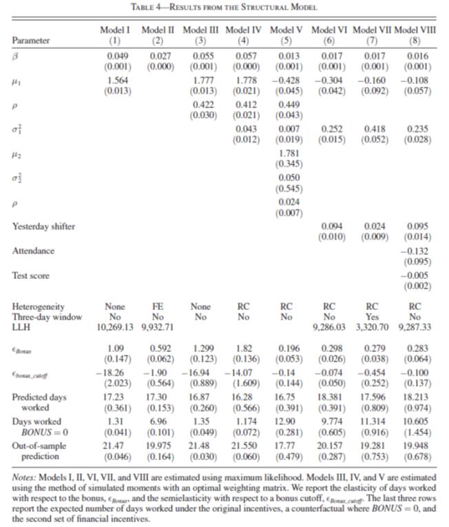
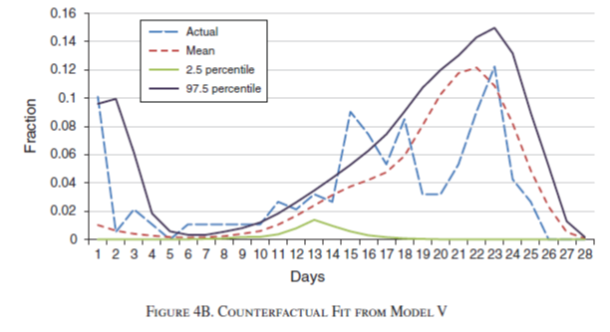

Clase 27. Introducción a modelos econométricos estructurales
Inferencia Causal
Irvin Rojas
rojasirvin.com
Centro de Investigación y Docencia Económicas División de Economía
Modelos estructurales
Tipo de modelos usados hasta ahora
Hasta ahora hemos estudiado relaciones de forma reducida
Estudiamos diversos métodos para tratar de identificar el efecto del tratamiento sobre la variable de resultados
Si bien nuestro estudio está guiado por la teoría económica algunas críticas a la forma reducida son
Que estos modelos no modelan la toma de decisiones
Los parámetros no tienen interpretación estructural
Los parámetros están confundidos por los valores de continuación (como veremos más adelante)
A favor de los modelos de forma reducida podemos argumentar que son computacionalmente poco costosos
Modelos estructurales
Los modelos estructurales especifican la función objetivo de los agentes
La función objetivo se fundamenta en la teoría económica pero se liga a los datos
Las decisiones y los conjuntos de información de los agentes se hacen explícitos
Se definen también las relaciones entre las variables y las preferencias
Son útiles para cuantificar efectos no solo en el corto plazo sino también en el largo plazo
Podemos comparar los resultados de corto plazo con lo que se obtiene de modelos de forma reducida
Permiten hacer simulaciones
Modelos estructurales completamente especificados
Definen las funciones objetivo de los actores
Definen el conjunto de acciones que pueden tomar
Especifican las variables que caracterizan el ambiente económico
La solución al modelo caracteriza las acciones óptimas del individuo en función del ambiente
Este tipo de modelos son el pan de cada día en ramas de la economía como la economía industrial o la economía de la energía y los recursos renovables
En economía, su uso se ha vuelto popular solo recientemente en algunas ramas como la economía laboral y el desarrollo económico
Ejemplos notables
¿Cómo responden maestros en India a un programa de incentivos para que asistan a clase?
¿Cómo afectó PROGRESA las decisiones de asistencia escolar de los niños que recibieron el programa?
¿Cómo afecta una reforma al sistema de pensiones en Chile a las decisiones de participación en el mercado laboral y las contribuciones?
¿Cuáles son los retornos de un programa de microcréditos en Tailandia?
¿Qué modelar y qué no?
Un modelo estructural caracteriza las decisiones y el ambiente pero también abstrae el problema de la complejidad del mundo real
Cuando se desarrolla un modelo estructural es común caer en la tentación de querer incluir demasiado
Debemos tomar decisiones y excluir algunas decisiones y relaciones
Algunas variables se asumen exógeneas y otras se omiten completamente del análisis
Algunos supuestos simplifican el análisis y otros se usan para identificar el modelo

¿Qué modelar y qué no?
Del rigor en la ciencia
… En aquel Imperio, el Arte de la Cartografía logró tal Perfección que el mapa de una sola Provincia ocupaba toda una Ciudad, y el mapa del Imperio, toda una Provincia. Con el tiempo, esos Mapas Desmesurados no satisficieron y los Colegios de Cartógrafos levantaron un Mapa del Imperio, que tenía el tamaño del Imperio y coincidía puntualmente con él. Menos Adictas al Estudio de la Cartografía, las Generaciones Siguientes entendieron que ese dilatado Mapa era Inútil y no sin Impiedad lo entregaron a las Inclemencias del Sol y de los Inviernos. En los desiertos del Oeste perduran despedazadas Ruinas del Mapa, habitadas por Animales y por Mendigos; en todo el País no hay otra reliquia de las Disciplinas Geográficas.
Suárez Miranda, Viajes de varones prudentes, Libro Cuarto, Cap. XLV, Lérida, 1658.
.right[– Jorge Luis Borges, 1946]
Combinación de modelos estructurales con experimentos aleatorios
Hemos estudiado con detalle las bondades de la variación experimental
Este tipo de variación puede explotarse también para estimar modelos estructurales
Pero también el modelo estructural puede servir para validar lo obtenido por métodos experimentales
Veremos un ejemplo muy interesante en el trabajo de Attanasio, Meghir & Santiago (2012) sobre PROGRESA
¿Qué ganamos y perdemos?
Ganamos
Entendimiento de los mecanismos
Diseño de mejores políticas
Análisis contrafactuales
A costa de
Recurrimos a muchos supuestos para darle estructura a los problemas
Supuestos distribucionales para parámetros de preferencias
Ingredientes
Estructura de las preferencias y mecanismos
Reglas de decisión: describen cómo los individuos toman decisiones en respuesta a diferentes realizaciones de las variables de estado
Variables de estado: describen el ambiente económico, institucional, natural (exógenas y endógenas)
Función valor: mapeo de las decisiones en un valor numérico
El concepto de función valor
A cada acción (o conjunto de acciones) se les asocia un valor numérico (la utilidad que implica tomar una decisión) dado un conjunto de variables de estado
Es el nivel de utilidad dada una acción y el valor de las variables de estado
En un problema dinámico la función valor no solo depende de las acciones tomadas hoy sino de las repercusiones que esta decisión tiene para las decisiones futuras
Estimación de modelos estructurales
La mayoría de los modelos estructurales son en la práctica modelos de optimización no lineales
La estimación de estos modelos es probablemente el costo de entrada más importante
El punto más importante de la estimación es la estimación de funciones valor y las reglas de decisión
Métodos de estimación
Máxima verosimilitud
Menos común
Funciona para problemas sencillos
Especificar la verosimilitud del problema y estimar los parámetros que maximizan la probabilidad de observar los datos
Método de momentos
Simular historias de acuerdo al comportamiento especificado e incluyendo perturbaciones
Estimar los parámetros que hacen consistentes los momentos muestrales con momentos observados en los datos
Comparación entre modelos
Los modelos estructurales y de forma reducida tienen ambos ventajas y desventajas
Un análisis completo combina ambos tipos y describe los resultados obtenidos con distintas metodologías
Los experimentos aleatorios proveen identificación limpian pero son caros y sirven para probar unas cuantas hipótesis
La combinación de modelos estructurales con variación experimental permite emplear estrategias de validación
Aplicación: los incentivos funcionan
Que los maestros vayan a la escuela
Duflo, Hanna y Ryan (2012) usan una combinación de modelos estructurales y asignación aleatoria de tratamiento
Alto nivel de ausentismo de maestros en la región de Udaipur en India
Experimento en 120 escuelas (60 tratadas y 60 control)
Contratos por mínimo 20 días de trabajo
Tratamiento
- Una cámara para tomar foto del maestro al inicio y al final del día
Sistema de incentivos
- Pago fijo de Rs. 1000 en el grupo de control
- Pago fijo de Rs. 1000 en el grupo de tratamiento más
- + Rs. 50 por cada día adicional asistido en el grupo de tratamiento
- - Rs. 50 por cada falta en los 20 días en el grupo de tratamiento
Efectos en la asistencia
- Efectivamente, los maestros asistieron más en el grupo de tratamiento (alrededor de 20 pp)
Fuente: Duflo, Hanna y Ryan (2012)
Incentivos
Hay dos formas de afectar la asistencia
Monitoreo
Incentivos financieros
Podemos analizar el problema desde el punto de vista puramente experimental
- Tratamiento con dos brazos
También explotar la estructura no lineal de los pagos
Modelo estructural
Modelo de oferta laboral
Diariamente el maestro maximiza
\[U_{tm}=U(C_{tm},L_{tm})=\beta C_{tm}(\pi_m)+(\mu_{tm}-P)L_{tm}\]
- El valor del ocio es estocástico
\[\mu_{tm}=\mu+\epsilon_{tm}\]
- \(P\) es el costo no pecuniario de no ir a trabajar
Modelo de los incentivos
\(p_m(t,d)\) es la probabilidad de ser despedido, que depende de los día trabajados \(d\) en el momento \(t\) de cada mes \(m\)
\(F\) es el pago si los despiden
Función de pago en el grupo de tratamiento
\[\pi_m=500+50\max\{0,d_{m-1}-10\}\]
donde \(d_{m-1}\) son los días trabajados en un mes
- Para los no tratados el pago es siempre de Rs 1,000 al final del mes
Ecuación de Bellman
Podemos partir un problema dinámico como la suma del pago contemporáneo más el valor del problema en los periodos restantes
Para el grupo de control, la ecuación de Bellman tiene la siguiente forma
\[ \begin{aligned} V_m(t,d;\epsilon_{tm})&=p_m(t,d)F+ \\ &(1-p_m(t,d))\times \max\{\mu-P+\epsilon_{tm}+EV_m(t+1,d;\epsilon_{t,m+1}), EV_m(t+1,d+1;\epsilon_{t,m+1})\} \end{aligned} \]
¿Cómo leemos esta función?
Si en el día \(t\), cuando llevas acumulados \(d\) días, te despiden, te llevas \(F\) y eso ocurre con probabilidad \(p_m(t,d)\)
Si no te despiden, con probabilidad \((1-p_m(t,d))\), los maestros deciden lo que les de más utilidad de entre
No ir a trabajar: \(\mu-P+\epsilon_{tm}+EV_m(t+1,d;\epsilon_{t,m+1})\)
Ir a trabajar: \(EV_m(t+1,d+1;\epsilon_{t,m+1})\)
Ecuación de Bellman
- El problema de los maestros en el grupo de tratamiento es algo más complejo
\[ \begin{aligned} V_m(t,d;\epsilon_{tm})&=p_m(t,d)F+ \\ &(1-p_m(t,d))\times \max\{\mu-\bar{P}+\epsilon_{tm}+EV_m(t+1,d;\epsilon_{t,m+1}), EV_m(t+1,d+1;\epsilon_{t,m+1})\} \end{aligned} \]
- En el periodo final
\[ \begin{aligned} V_m(T_m,d;&\epsilon_{T_m m})=p_m(T_m,d)F+ \\ &(1-p_m(T_m,d))\times\max\{\mu-\bar{P}+\epsilon_{T_m m}+\beta\pi(d)+EV_m(1,0;\epsilon_{t,m+1}), \beta\pi(d+1)+EV_m(1,0;\epsilon_{t,m+1})\} \end{aligned} \]
En el periodo final importa cuántos días se han acumulado pues esto se traduce en consumo
Este tipo de problemas se resuelve por inducción hacia atrás
- Empezar en \(T_m\) y partir el problema de horizonte infinito en una serie repetida de problemas de horizonte finito
Estimación
El propósito es estimar los parámetros del modelo
- Cómo el consumo se transforma en utilidad \(\beta\)
- El coeficiente sobre el ocio \(\mu\)
Se pueden asumir distintos tipos de modelo
- Donde \(\mu\) es común a todos y los errores son iid
- Donde la asistencia tiene correlación serial en las decisiones y en el error
- Heterogeneidad en la calidad de maestros
Coeficientes estimados
En los datos, el promedio de días trabajados es 17.16
Noten que los modelos predicen bien este momento
\(BONUS=1\) simula lo que deberíamos esperar en el grupo de control
El modelo V predice mejor la asistencia en el grupo de control

Ajuste del modelo
- El modelo V tiene un buen ajuste con respecto a lo observado en los datos

Simulaciones
Una de las ventajas de los modelos estructurales es que nos sirven como un laboratorio para simular escenarios contrafactuales
Cambio: pago mínimo subió a Rs. 700 por trabajar los primeros 12 días
En los datos la asistencia promedio pasó de 17.16 a 17.39

Conclusión
Los modelos estructurales son una forma de combinar la teoría y los datos
Cuando tenemos variación aleatoria, podemos añadir valor al análisis empírico
Hay un costo de entrada en términos de las técnicas para resolver y estimar los modelos estructurales
Hay un trade-off entre complejidad y transparencia
Próxima sesión
Tendremos una presentación sobre otra aplicación de modelos econométricos estructurales
- Attanasio, O. P., Meghir, C., & Santiago, A. (2011). Education choices in Mexico: using a structural model and a randomized experiment to evaluate Progresa. The Review of Economic Studies, 79(1), 37-66.
La próxima semana revisaremos
Athey, S., & Imbens, G. W. (2019). Machine learning methods that economists should know about. Annual Review of Economics, 11.
Varian, H. R. (2014). Big data: New tricks for econometrics. Journal of Economic Perspectives, 28(2), 3-28
Presentación creada usando el paquete xaringan en R.
El chakra viene de remark.js, knitr, y R Markdown.
Material de clase en versión preliminar.
No reproducir, no distribuir, no citar.